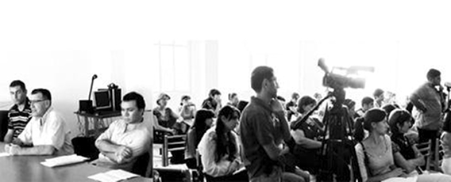

ГРАНУШ ХАРАТЯН ПРОТИВ НАРУШЕНИЙ ПРАВ НАЦИОНАЛЬНЫХ МЕНЬШИНСТВ НА ЮЖНОМ КАВКАЗЕ
Протокол Гражданского слушания
с участием представителей Армении
и Грузии
Ереван
24.09.2010
Истец: Грануш Харатян
Ответчик: Артак Заргарян
Председатель комиссии: Георгий Ванян
Члены комиссии: Ираклий Чихладзе, Нана Плиева, Владимир Унанянц, Юлия Адельханова, Армине Бабаян, Григор Минасян
Программу осуществляет:
Кавказский Центр Миротворческих Инициатив - Армения
в сотрудничестве с Общеобразовательным комплексом «Мхитар Себастаци»
при поддержке Национального фонда демократии (NED)
с участием представителей Армении
и Грузии
Ереван
24.09.2010
Истец: Грануш Харатян
Ответчик: Артак Заргарян
Председатель комиссии: Георгий Ванян
Члены комиссии: Ираклий Чихладзе, Нана Плиева, Владимир Унанянц, Юлия Адельханова, Армине Бабаян, Григор Минасян
Программу осуществляет:
Кавказский Центр Миротворческих Инициатив - Армения
в сотрудничестве с Общеобразовательным комплексом «Мхитар Себастаци»
при поддержке Национального фонда демократии (NED)
ВЫСТУПЛЕНИЕ ИСТЦА
Уважаемый суд! Позвольте мне, до того как перейти к сути моего иска, поставить вопрос: Кто же является пострадавшим в нашем деле? Ведь любой судебный процесс предполагает наличие пострадавшей стороны. В нашем случае мы имеем дело с неопределенностью в определении понятия национальных меньшинств, и вместе с тем, в большинстве случаев наши «пострадавшие» не информированы о своих правах, и следовательно – не информированы о том, что эти права нарушаются.
До сих пор нет правовой формулировки определяющей понятие «национальное меньшинство». Подход Совета Европы состоит в том, что каждый человек может сам определить свою национальную принадлежность. Так, нет ни одного нормативного документа, на основе которого ребенок, родители которого армяне, должен быть идентифицирован как армянин. Наоборот, национальная (этническая) самоидентификация не требует обоснований в правовом аспекте. Так, например, при переписи населения вы можете зафиксировать за собой любую национальную принадлежность, и никто не будет задавать вам вопросы и требовать доказательств по этому поводу. Это одна из особенностей, одна из проблем, которая напрямую касается рассматриваемой нами сегодня темы, и надо отметить, что столь же расплывчато понятие национального меньшинства как группы людей – более малочисленной группы, проживающей среди другой многочисленной. На практике подобная трактовка и сам смысл понятия «меньшинство» тоже опровергается. Так, абхазы, например, самоопределились на территории, где сами являлись меньшинством. В сегодняшней Республике Адыгея в РФ адыги составляют только 22 процента населения, но им принадлежит политическое руководство. В таких случаях остается открытым вопрос – кто, какая группа является национальным меньшинством? Нет также правового определения того, из скольких членов должна состоять группа людей - 5, 500 или 5000 людей нужно для того, чтобы считаться национальным меньшинством, и чтобы к ним применялась соответствующая правовая защита? Таким образом, мы должны принять во внимание, что объект нашего слушания не определен ни национальным, ни международным правом и на практике это создает проблематичные ситуации. На практике для того, чтобы национальное меньшинство было признано таковым, с одной стороны нужно его восприятие остальными группами в культурной плоскости, с другой нужна достаточная инициатива и воля данной группы сохранить свою идентичность.
Международные нормы, регулирующие права национальных меньшинств были сформулированы только в 1992 году, после длительных обсуждений. Документ содержащий эти нормы называется «Рамочной Конвенцией по защите прав национальных меньшинств», и к ней в различные периоды присоединились все три Южно-кавказские республики. В конвенции перечислены права нацменьшинств.
Надо отметить, что в праве, и в частности в Конвенции обходится, четко не определяется также понятие «язык национального меньшинства», в силу чего затрудняется как применение конвенции, так и судебная защита прав. Что является родным языком? Может быть разница между национальной и языковой идентификацией. С подобной проблемой мы, в Армении столкнулись в случае с ассирийской общиной, часть которой считает что их родным языком, следовательно, их языком как национального меньшинства, является русский, и таким образом выдвигает требование к государству обеспечивать их права по обоим языкам – и русскому и ассирийскому. В данном случае субъектом права является не национальное меньшинство, а языковое, которое уже регулируется Хартией о защите региональных языков и языков национальных меньшинств. Здесь мы имеем противоречие в применении этих двух документов. Во время присоединения к хартии сами станы определяют языки-объекты защиты. В случае с Арменией это: русский, ассирийский, греческий, йезидский и курдский. Сразу возникает вопрос: почему ейзидский и курдский отдельно, в том время как это один и тот же язык? Потому что есть проблемы национальной идентичности, которые не являются предметом сегодняшнего обсуждения, это частный случай. Присоединившись к этой хартии, государство обязано обеспечить социальную, образовательную, административные службы на этих языках. Из постсоветского пространства только Армения, первой присоединилась к Хартии, и только в прошлом году, Украина подписала этот документ. Для меня очень удивителен выбор Армении этих 5 языков, поскольку даже при максимальном проявлении доброй воли, Армения не в состоянии, не способна выполнить взятые на себя обязанности, и даже в некоторых случаях, выполнение этих обязательств кажется бессмысленным. То есть, по моему мнению, подписание Хартии со стороны Армении было непродуманным шагом, как в выборе языков, так и в выборе уровня их защиты. Хочу отметить также, что в Армении нет региональных языков, и поэтому она присоединилась к Хартии по части защиты национальных меньшинств. В то же время региональные языки есть и в Грузии и в Азербайджане, но эти две страны не присоединились к хартии. Между тем и здесь есть многочисленные проблемы.
Все три страны Южного Кавказа, претендуя стать частью Европейской семьи, взяли на себя обязательство по защите прав национальных меньшинств, а также обязательство адаптировать национальное законодательство к требованиям международных стандартов защиты этих прав. Во всех трех Конституциях также есть пункт о приоритетном применении международного права, в случае отсутствия национального законодательства по какому-либо вопросу или в случае если национальное законодательство противоречит международному праву.
Учитывая, что есть определенные различия в ситуации по этим трем странам, в моем иске я дифференцировала проблемы и хочу предложить их Вашему вниманию отдельно, по каждой из стран.
Армения, как я уже отметила, присоединилась ко всем основным конвенциям, относящимся к данной сфере. Могу утверждать, что национальное законодательство в большей части адаптировано под международные нормы, но эти нормы закона не всегда применяются. Например, Армения не способна в плане материального обеспечения, и также не предпринимает ни каких шагов для выполнения своих обязательств по Хартии. Армения не может и не осуществляет предоставление социальных услуг на вышеназванных пяти языках. Армения не может, и не осуществляет телевизионное вещание на этих пяти языках. В качестве исключения можно считать вещание на русском, но и это - готовые программы, которым просто предоставляется эфир. По 4 из этих языков (кроме греческого) ведутся радиопередачи. В Армении нет также дошкольного образования на греческом языке, формально и на низком уровне осуществляется также дошкольное обучение на йезидском и курдском. В частности, в йезидонаселенных деревнях, где нет практики общения на армянском, дети поступают в первый класс абсолютно не владея армянским, и их учителя, как правило, не владеют йезидским. И абсолютно ясно, что ребенок-йезид резко отстает от своих сверстников армян в процессе получения образования. Уважаемый суд, я попросила мальчика-четвероклассника в одном из йезидских школ просто прочитать текст, он еле разбирал буквы, и уже понятно каков уровень его усвоения математики и естественных наук. Это проблема организации образования. И я считаю, что в данном случае нарушается право на сохранение идентичности, поскольку национальное меньшинство ущемляется в праве на получение образования наравне с другими.
Могу сказать, что и административное делопроизводство в Армении не осуществляется на языках национальных меньшинств (кроме отдельных случаев применения русского языка). Было выдвинуто предложение, чтобы при равных результатах экзаменов на прием в государственную службу в органах самоуправления, предпочтение отдавалась носителям языка национальных меньшинств, живущих в данной местности. И это предложение могло бы несколько смягчить ситуацию.
Уважаемый суд, хочу также отметить, что в русских школах Армении, а также в так называемых русских секциях армянских школ, в государственных школах Армении, обучение ведется по учебникам РФ. Это не обеспечивает право учащихся на получение государственного образования Армении.
Образования ассирийской общины осуществляется некорректно, поскольку дети изучают одновременно русский и ассирийский, а изучение армянского ведется на уроне иностранного языка. Здесь нарушается как право образования на родном языке (двойственная идентификация), так и право образования на государственном языке.
Самая главная составляющая моего иска против Грузии состоит в том, что в Грузии выбрана усложненная система обучения грузинскому языку, которая организуется для национальных меньшинств-носителей региональных языков – армян и азербайджанцев. Обязательное знание грузинского является правом государства и обязанностью представителей национальных меньшинств. Но та процедура, которая выбрана для обучения грузинскому, усложнена и нарушает права национальных меньшинств на получение образования на государственном языке с сохранением собственной идентичности.
Проблема состоит также и в том, что административное делопроизводство регионов, населенных национальными меньшинствами, ведется только на грузинском языке. Это тоже является нарушением прав национальных меньшинств. Государственная установка Грузии достичь того, чтобы ее граждане имели общий язык общения – понятна, но тот путь, который выбран для достижения этой цели служит не интеграции, а наоборот отчуждению национальных меньшинств. В частности, хочу отметить открытие Армянского Университета в Ахалкалаки, где учится всего двое армян. Здесь мы видим расхождение между формой и содержанием, которое приводит к нарушению права.
Что касается Азербайджана, я думаю, здесь есть многочисленные нарушения права национальных меньшинств. Национальное законодательство минимально приспособлено к международным нормам, и по моему мнению, нужно привлечь внимание международных структур в частности, к тому обстоятельству, что в Азербайджане есть региональные меньшинства, и нарушаются их права на сохранение их исторической, языковой и культурной идентичности. И сохранение этих меньшинств можно сказать не то что под вопросом, но можно сказать, что они могут быть обречены на потерю идентичности. Это не только проблема Азербайджана. Это общая для многих стран мира проблема сохранения культурного многообразия, поскольку многие группы, особенно те которые являются коренными жителями, не определены как национальные меньшинства, и следовательно не пользуются соответствующими правами.
Хочу также отметить, что все три страны Южного Кавказа не имеют национального закона регулирующего права национальных меньшинств. Спасибо за внимание.
Конец доклада.
Председатель, обращаясь ко всем, предлагает задавать вопросы Истцу.
Юлия Адельханова, член комиссии: Как известно право на осуществление судопроизводства на родном языке является одним из социокультурных прав человека. Как обеспечивается это право в Армении?
Истец: Это очень хороший вопрос. В Армении в принципе это право обеспечивается, но материальные затраты и организация процесса перевода осуществляет участник процесса. Здесь мы иногда сталкивается с комичными случаями. Например, адвокат, юрист, или сами переводчики советуют участникам судебных процессов йезидской национальности, чтобы они, несмотря на то, что владеют армянским языком лучше, чем йезидским, потребовали ведение процесса на йезидском. Притом бывают случаи, когда подсудимый требует также письменного протоколирования на своем родном языке. И учитывая сложность процесса перевода, поскольку в йезидском языке есть трудности перевода юридической терминологии, бывают случаи, когда из-за этой формальности затягивается и усложняется процесс. Так что наша судебная система, имеющая множество недостатков, в этом вопросе проявляет удивительную последовательность.
Владимир Унанянц, член комиссии: В Грузии с этого года ввели билингвистические учебники для национальных меньшинств. Есть ли в Армении подобные проекты создания подобных учебников?
Истец: Хороший вопрос. Но я не в курсе. Обязательно постараюсь уточнить.
Арсен Галстян, историк-общестововед: Есть ли в международном праве нормативы или критерии, касающиеся того, что национальное меньшинство должно быть расселено на определенной территории, чтобы иметь право на определенный статус автономии? В случае, например, если то или иное национальное меньшинство, право сохранения идентичности которого обеспечивается, и у этого меньшинства есть достаточный потенциал для автономии, может ли это меньшинство в законном порядке потребовать для себя статус автономии какого-либо уровня?
Истец: Нет, это проблема не регулируется международными нормами. В процессе формирования права по вопросу национальных меньшинств, была поставлена задача внутреннего регулирования отношений между государством и национальными меньшинствами внутри существующих государственных систем – при этом решается задача сохранения национальной самобытности. Территориальный вопрос регулируется другой сферой права.
Тигран Григорян, 11 класс: Существовала ли проблема национальных меньшинств в СССР, и выделялись ли какие-то государственные средства для защиты их прав?
Истец: Национальный вопрос и вопрос национальных меньшинств в СССР решался посредством явных и скрытых механизмов. Явным механизмом были законы. Скрытым – политика. Например, у советской власти была задача ассимиляции малых народов в среде титульных. Хотя также, как например, в США принято говорить что решение национального вопроса возможно по аналогии с двумя типами салата, в одном случае продукты кладутся отдельными слоями, в другом случае тщательно перемешиваются. И оба метода применяются в решении национального вопроса. Во время СССР, например, осуществлялись проекты создания крупных промышленных комплексов в отдаленных от центра районах, что приводило к перемещению туда русского населения, и существовала также обратная трудовая миграция. Впрочем, не всегда подобная ассимиляционная политика достигала эффекта. В то же время существовали государственный льготы для северных народов СССР – эвенков, чукчей, хантов и других, субсидировалось развитие их национальной культуры.
Армения же тоже подчинялась общей советской логике в этом вопросе, например в азербайджано-населенном Вардениском районе три четверти административного состава были азербайджанцами. Расскажу Вам об одном примечательном факте, в 50-70-ых годах в Вардениском районе армянам выдавались свидетельства о рождении образца, принятого в Азербайджанской ССР. В СССР были определенные проблемы, и думаю сегодняшняя ситуация во многом ими продиктована. Образно выражаясь, можно также сказать, что в СССР существовало имперское мышление, и все нерусские по национальности фактически были национальными меньшинствами.
Геворк Акопян: Известно ли Вам какое-либо государство, кроме Грузии, где действуют государственные армянские школы?
Истец: Я знаю страны, где есть национальные (армянские школы) которые частично финансируются государством. Но это не армянские школы в полном смысле этого слова, они армянские настолько, насколько в них для армянских детей организуется преподавание дополнительных предметов, и эта система принимается по желанию родителей, поскольку получив чисто армянское образование, их дети будут иметь проблемы с адаптацией. В вашем вопросе поставлена очень важная проблема. Думаю в Грузии, у Джавахетских армян есть серьезная проблема усвоения, обучения грузинскому языку – решение этой проблемы нужно прежде всего самим армянам.
Председатель комиссии просит Истца конкретно ответить на вопрос. Истец заявляет, что не обладает достаточными сведениями и не берется утверждать что-либо.
Председатель заканчивает сессию вопросов и ответов, и, передавая слово Ответчику, отмечает, что предстоит довольно интересное обсуждение, поскольку помимо различия позиций, Истец и Ответчик олицетворяют собой различные поколения, что предает особый интерес слушанию и может приветствоваться.
ОТВЕТНАЯ РЕЧЬ АРТАКА ЗАРГАРЯНА
Хочу поблагодарить госпожу Харатян за очень интересное и познавательное для меня выступление, поскольку многое в нем было для меня новым и отличающимся от доступной официальной информации. Я приветствую наших гостей из Грузии. И попробую представить вниманию суда другую точку зрения на поднятую тему.
Прежде всего, я хочу сказать, что мой ответ не содержит информацию о состоянии и статусе национальных меньшинств в Азербайджане. Это объясняется тем, что в данный момент Армения и Азербайджан являются закрытыми обществами друг для друга, и имеющаяся информация по этому вопросу недостоверна. Помимо этого, то, что мы знаем об Азербайджане, и знают в Азербайджане о нас, является лишь результатом государственной пропаганды. Посему, я полагаю что опираясь лишь на официальные государственные источники, не может быть установлена достоверная картина проблем национальных меньшинств в этой стране.
Обратимся к вопросу национальных меньшинств в Армении. 96% населения Армении составляют армяне. Национальные меньшинства: русские, молокане, езиды, курды, ассирийцы, греки, украинцы и евреи. В отличие от других стран Южного Кавказа, национальные меньшинства Армении довольно интегрированы в обществе, и являются его неотъемлемой частью. В настоящее время в Армении действуют разные общественные организации и союзы, созданные национальными меньшинствами. Хочу подчеркнуть, что текущий год был объявлен ЮНЕСКО годом международного культурного слияния, и в рамках этого мероприятия были организованы культурные дни национальных меньшинств Армении. Подчеркнутый выше факт является доказательством того, что национальные меньшинства не подвергаются никакому давлению со стороны государства и общества, давлению, основанному на факте национальной принадлежности. Помимо этого, в тех регионах, где проживают национальные меньшинства, в школах, где они обучаются, они обязательно изучают родной язык. Конечно же, данные меры нельзя считать достаточными, так как явно ощутим недостаток педагогов-специалистов и специальной литературы. В тоже время надо отметить, что если в армянских школах действующих зарубежом все учителя – армяне, то у нас представители национальных меньшинств не столь активны, не стремятся получить высшее образование, и работать в своих национальных школах, или же предпринимать другие практические шаги для сохранения своего языка. То есть проблемы возникают также из-за безынициативности самих национальных меньшинств. Те проволочки, которые бывают, например, в министерстве образования в вопросе учебников, обусловлены не отношением к национальным меньшинствам, а по сути являются результатом плохой работы государственных органов в целом. Нельзя полностью исключить проблемы национальных меньшинств в Армении, но особенность нашей ситуации в том, что все эти проблемы смягчаются высоким уровнем их интегрированности и отсутствием конфликтности.
Что касается национальных меньшинств, проживающих на территории Грузии, грузинская сторона утверждает, что не может делать различия между гражданами Грузии различных национальностей и давать преференции армянам или азербайджанцам. Исходя из политических обстоятельств истории Грузии последних двух десятилетий (аналогия с Абхазией и Южной Осетии). Это - политическая мотивированная позиция.
Грузинская сторона утверждает, что ускоренное введение грузинского языка в школьное обучение и делопроизводство в Джавахке или Марнеули будет способствовать быстрой интеграции армян и азербайджанцев в грузинское общество. Теоретически логичное и в долгосрочной перспективе справедливое утверждение, но практика реализации приводит к существенным нарушениям – увольняются учителя армянских и азербайджанских школ, в регионах, где до 95% населения составляют этнические меньшинства (из которых также до 95% не знают грузинского языка), вводится обязательное использование грузинского, что приводит к коллапсу системы местного самоуправления, увольнению негрузинских работников, коррупции и т.д. В данном случае остается под вопросом, является ли это результатом плохого администрирования или направленной дискриминации.
Грузинская сторона отказывается имплементировать Рамочную конвенцию и Хартию региональных языков, мотивируя это тем, что кроме армянского и азербайджанского, это приведет к проблемам грузинского государства с мегрелами, сванами и аджарцами – грузинских субэтносов, что скажется на собранности грузинской нации и т.д. Это - проблема на уровне восприятия грузинского общества и элиты.
Грузинская сторона увязывает требования этнических меньшинств с якобы имеющимися требованиями об автономии и отделении от Грузии. Грузинская сторона утверждает, что послабления в вопросе языков и прав этнических меньшинств могут стимулировать их к еще более высоким требованиям – автономии, сепаратизму и т.д. Это - проблема на уровне фобий и общественного восприятия.
Проблема на уровне геополитики. Грузинская сторона увязывает проблему меньшинств с происками внешних сил (в первую очередь России, затем Армении и частично Азербайджана) и аргументирует перед европейским сообществом, что невыполнение Грузией данных Конвенций и Хартии вызвано внешнеполитическими проблемами грузинского государства.
Исходя из вышеуказанных фактов, иск считаю безосновательным. Сегодня во всех трех странах Южного Кавказа есть более важные и нерешенные проблемы, имеющие национальную и государственную значимость, и только после их решения будет возможно решить насущные вопросы национальных меньшинств.
Конец доклада.
Председатель, обращаясь ко всем, предлагает задавать вопросы Ответчику.
Вопрос Истца: Как вы думаете, нерешенность проблем нацменьшинств и их игнорирование не может ли привести к смене их долгосрочных планов, например к большей конфликтности, или же к их исчезновению, и два этих исхода не могут разве влиять на решение как Вы выразились более важных государственных задач?
Ответчик: Страны Южного Кавказа находятся в переходном периоде, и еще не сформированы соответствующие институты, способные эффективно обеспечивать права национальных меньшинств. Я не отделяю их проблемы от других проблем, наоборот, считаю, что эти проблемы носят глобальный характер. Сегодня, например, из-за социальной необеспеченности Армению покидают не только йезиды и ассирийцы, но и сами армяне.
Кто считает аргументы и взгляд Истца более обоснованными?
За – 23
Против – 9
Воздержавшихся – 2
Прежде всего, я хочу сказать, что мой ответ не содержит информацию о состоянии и статусе национальных меньшинств в Азербайджане. Это объясняется тем, что в данный момент Армения и Азербайджан являются закрытыми обществами друг для друга, и имеющаяся информация по этому вопросу недостоверна. Помимо этого, то, что мы знаем об Азербайджане, и знают в Азербайджане о нас, является лишь результатом государственной пропаганды. Посему, я полагаю что опираясь лишь на официальные государственные источники, не может быть установлена достоверная картина проблем национальных меньшинств в этой стране.
Обратимся к вопросу национальных меньшинств в Армении. 96% населения Армении составляют армяне. Национальные меньшинства: русские, молокане, езиды, курды, ассирийцы, греки, украинцы и евреи. В отличие от других стран Южного Кавказа, национальные меньшинства Армении довольно интегрированы в обществе, и являются его неотъемлемой частью. В настоящее время в Армении действуют разные общественные организации и союзы, созданные национальными меньшинствами. Хочу подчеркнуть, что текущий год был объявлен ЮНЕСКО годом международного культурного слияния, и в рамках этого мероприятия были организованы культурные дни национальных меньшинств Армении. Подчеркнутый выше факт является доказательством того, что национальные меньшинства не подвергаются никакому давлению со стороны государства и общества, давлению, основанному на факте национальной принадлежности. Помимо этого, в тех регионах, где проживают национальные меньшинства, в школах, где они обучаются, они обязательно изучают родной язык. Конечно же, данные меры нельзя считать достаточными, так как явно ощутим недостаток педагогов-специалистов и специальной литературы. В тоже время надо отметить, что если в армянских школах действующих зарубежом все учителя – армяне, то у нас представители национальных меньшинств не столь активны, не стремятся получить высшее образование, и работать в своих национальных школах, или же предпринимать другие практические шаги для сохранения своего языка. То есть проблемы возникают также из-за безынициативности самих национальных меньшинств. Те проволочки, которые бывают, например, в министерстве образования в вопросе учебников, обусловлены не отношением к национальным меньшинствам, а по сути являются результатом плохой работы государственных органов в целом. Нельзя полностью исключить проблемы национальных меньшинств в Армении, но особенность нашей ситуации в том, что все эти проблемы смягчаются высоким уровнем их интегрированности и отсутствием конфликтности.
Что касается национальных меньшинств, проживающих на территории Грузии, грузинская сторона утверждает, что не может делать различия между гражданами Грузии различных национальностей и давать преференции армянам или азербайджанцам. Исходя из политических обстоятельств истории Грузии последних двух десятилетий (аналогия с Абхазией и Южной Осетии). Это - политическая мотивированная позиция.
Грузинская сторона утверждает, что ускоренное введение грузинского языка в школьное обучение и делопроизводство в Джавахке или Марнеули будет способствовать быстрой интеграции армян и азербайджанцев в грузинское общество. Теоретически логичное и в долгосрочной перспективе справедливое утверждение, но практика реализации приводит к существенным нарушениям – увольняются учителя армянских и азербайджанских школ, в регионах, где до 95% населения составляют этнические меньшинства (из которых также до 95% не знают грузинского языка), вводится обязательное использование грузинского, что приводит к коллапсу системы местного самоуправления, увольнению негрузинских работников, коррупции и т.д. В данном случае остается под вопросом, является ли это результатом плохого администрирования или направленной дискриминации.
Грузинская сторона отказывается имплементировать Рамочную конвенцию и Хартию региональных языков, мотивируя это тем, что кроме армянского и азербайджанского, это приведет к проблемам грузинского государства с мегрелами, сванами и аджарцами – грузинских субэтносов, что скажется на собранности грузинской нации и т.д. Это - проблема на уровне восприятия грузинского общества и элиты.
Грузинская сторона увязывает требования этнических меньшинств с якобы имеющимися требованиями об автономии и отделении от Грузии. Грузинская сторона утверждает, что послабления в вопросе языков и прав этнических меньшинств могут стимулировать их к еще более высоким требованиям – автономии, сепаратизму и т.д. Это - проблема на уровне фобий и общественного восприятия.
Проблема на уровне геополитики. Грузинская сторона увязывает проблему меньшинств с происками внешних сил (в первую очередь России, затем Армении и частично Азербайджана) и аргументирует перед европейским сообществом, что невыполнение Грузией данных Конвенций и Хартии вызвано внешнеполитическими проблемами грузинского государства.
Исходя из вышеуказанных фактов, иск считаю безосновательным. Сегодня во всех трех странах Южного Кавказа есть более важные и нерешенные проблемы, имеющие национальную и государственную значимость, и только после их решения будет возможно решить насущные вопросы национальных меньшинств.
Конец доклада.
Председатель, обращаясь ко всем, предлагает задавать вопросы Ответчику.
Вопрос Истца: Как вы думаете, нерешенность проблем нацменьшинств и их игнорирование не может ли привести к смене их долгосрочных планов, например к большей конфликтности, или же к их исчезновению, и два этих исхода не могут разве влиять на решение как Вы выразились более важных государственных задач?
Ответчик: Страны Южного Кавказа находятся в переходном периоде, и еще не сформированы соответствующие институты, способные эффективно обеспечивать права национальных меньшинств. Я не отделяю их проблемы от других проблем, наоборот, считаю, что эти проблемы носят глобальный характер. Сегодня, например, из-за социальной необеспеченности Армению покидают не только йезиды и ассирийцы, но и сами армяне.
ИТОГИ ГОЛОСОВАНИЯ
Кто считает аргументы и взгляд Истца более обоснованными?
За – 23
Против – 9
Воздержавшихся – 2
КОММЕНТАРИИ ЧЛЕНОВ КОМИССИИ
Юлия Адельханова: Хочу поблагодарить истца и ответчика за интересные доклады, из которых я узнала много нового о ситуации с правами нацменьшинств в Армении. Жаль, однако, что мало внимания было уделено оценке ситуации в Азербайджане - ведь при желании и при наличии интернета информационный вакуум можно свести к минимуму. Еще хотелось бы отметить, что и истец, и ответчик, как мне показалось, использовали двойные стандарты. Оба, говоря о проблемах нацменьшинств в Армении, использовали эпитеты гораздо более мягкие, чем, когда речь шла о таких же проблемах в Грузии.
Владимир Унанянц: Согласен с Юлией, говоря о проблемах нацменьшинств, и истец и ответчик вольно или невольно "защищали" Армению и "критиковали" Грузию и Азербайджан, отмечая, что с правами нацменьшинств в Армении есть "определенные проблемы", в то время как в Азербайджане и Грузии эти права "нарушаются". По итогам голосования, убедительную победу одержала истец Грануш Харатян. Хотя ее выступление естественно с самого начала было "обречено" на победу, потому что, в странах Южного Кавказа, к сожалению, термин "национальные меньшинства" прежде всего ассоциируется с нарушением их прав.
Ираклий Чихладзе: По выступлениям истца и ответчика становится ясно, что полноценной и достоверной информацией о жизни национальных меньшинств в соседних странах эксперты из Армении не владеют. Что касается Азербайджана - понятно, так как практически никаких контактов (кроме интернета) с этой страной нет. Но удивительно, что нет достоверной информации и о жизни той же армянской общины в Грузии. Так, прозвучало мнение о непропорциональном распределении постов в органах местной власти. Могу сказать, что в Джавахети абсолютное большинство занимают именно местные кадры, представленные этническими армянами. В регионе Квемо Картли ситуация действительно обстоит хуже. Но в целом считаю, что в обсуждении проблем защиты прав этнических меньшинств должны принимать представители всех стран Южного Кавказа, а в идеале и представители самих этнических меньшинств.
Нана Плиева: Я впервые принимала участие в подобном проекте: суд - символичный, “присяжные” - учителя и учащиеся старших классов. Тема одна из самых злободневных и нечасто обсуждаемых – права национальных меньшинств в странах Южного Кавказа. Примечательно, что истицей выступила бывший советник президента Армениии по делам нацменьшинств, а ответчиком - учитель средней школы, имеющий косвенное отношение к выработке государственной политики.
Неудивительно, что госпожа Харатян была лучше подкована, хотя бывший чиновник то и дело давал о себе знать - она дипломатично обходила самые острые проблемы. Например, на вопрос об армянских школах Георгий не сразу получил ответ.
Несмотря на то, что к «Рамочной Конвенцией по защите прав национальных меньшинств» присоединились все страны Южного Кавказа, проблема интеграции стоит остро. В Армении, где представители нетитульного этноса (ненавижу это определение) составляют 4%, по признанию истца и ответчика, положение неармянского населения не критично. Однако выяснилось, что государство не в силах обеспечить ни обучение, ни судопроизводство на языке национальных меньшинств. О телепередачах на неармянском можно и вовсе забыть. Исключение составляет русский, в основном за счет трансляции российских каналов.
И истец, и ответчик сошлись, пожалуй, в одном - критике государственной политики Грузии в отношении национальных меньшинств. Ситуация в Самцхе-Джавахети - болевая точка армянского общества, хотя проблема интеграции национальных меньшинств в Грузии шире и не исчерпывается ситуацией в этом уголке страны. (или как выражался истец в Джавахке:). Чувствуется недостаток объективной информации. О том, что происходит в Самцхе-Джавахети, в Армении часто узнают из русскоязычных СМИ или госканалов, не отличающихся сбалансированностью. А потому люди оказываются в плену откровенной лжи. Уважаемый учитель убежден, что армян в Грузии не берут в армию, считая ненадежным элементом. Не разобрался со сванами, мегрелами и аджарцами Артак, считая их потенциальным источником сепаратизма и чуть ли не отдельным этносом. Источник информации – тбилисские таксисты. Часто то, что приветствуется дома, воспринимается с сомнением в соседней стране. Например, Грануш Харатян сочла сомнительной практику преподавания в русских школах Армении по российским учебникам. Но обучение в армянских школах Грузии по учебникам министерства образования Армении она считает не просто желательным, но и обязательным условием сохранения культурной и национальной идентичности.
Наверняка, не лучше обстоят дела в Азербайджане, но исторические параллели не только не проясняют сути вопроса, а еще больше запутывают. А потому позиция ответчика была мне более понятна. Он честно признался, что и армянское, и азербайджанское общество в плену госпропаганды и нет смысла ее тиражировать.
Очень порадовала публика, которая внимательно следила за дискуссией длиной в не один школьный урок и задавала острые вопросы. Государство проиграло в символическом суде, а значит от него ждут другого отношения к проблеме и другой политики. Аргумент, очень точно выделенный Артаком о том, что у власти есть дела и поважнее никого не убедил.
Убедили замечательные ребята из старших классов, открытые и доброжелательные. Несмотря на то, что “завистливые ” грузины не восстанавливают армянские памятники (крылатая фраза Артака) многие из них искренне интересуются Грузией. Например, 11 старшеклассников учат грузинский. Это вдвое больше тех, кто выбрал турецкий. А значит, взаимной подозрительности и недоверия станет меньше, если не в масштабах стран Южного Кавказа, то в пределах этой школы - точно.
Владимир Унанянц: Согласен с Юлией, говоря о проблемах нацменьшинств, и истец и ответчик вольно или невольно "защищали" Армению и "критиковали" Грузию и Азербайджан, отмечая, что с правами нацменьшинств в Армении есть "определенные проблемы", в то время как в Азербайджане и Грузии эти права "нарушаются". По итогам голосования, убедительную победу одержала истец Грануш Харатян. Хотя ее выступление естественно с самого начала было "обречено" на победу, потому что, в странах Южного Кавказа, к сожалению, термин "национальные меньшинства" прежде всего ассоциируется с нарушением их прав.
Ираклий Чихладзе: По выступлениям истца и ответчика становится ясно, что полноценной и достоверной информацией о жизни национальных меньшинств в соседних странах эксперты из Армении не владеют. Что касается Азербайджана - понятно, так как практически никаких контактов (кроме интернета) с этой страной нет. Но удивительно, что нет достоверной информации и о жизни той же армянской общины в Грузии. Так, прозвучало мнение о непропорциональном распределении постов в органах местной власти. Могу сказать, что в Джавахети абсолютное большинство занимают именно местные кадры, представленные этническими армянами. В регионе Квемо Картли ситуация действительно обстоит хуже. Но в целом считаю, что в обсуждении проблем защиты прав этнических меньшинств должны принимать представители всех стран Южного Кавказа, а в идеале и представители самих этнических меньшинств.
Нана Плиева: Я впервые принимала участие в подобном проекте: суд - символичный, “присяжные” - учителя и учащиеся старших классов. Тема одна из самых злободневных и нечасто обсуждаемых – права национальных меньшинств в странах Южного Кавказа. Примечательно, что истицей выступила бывший советник президента Армениии по делам нацменьшинств, а ответчиком - учитель средней школы, имеющий косвенное отношение к выработке государственной политики.
Неудивительно, что госпожа Харатян была лучше подкована, хотя бывший чиновник то и дело давал о себе знать - она дипломатично обходила самые острые проблемы. Например, на вопрос об армянских школах Георгий не сразу получил ответ.
Несмотря на то, что к «Рамочной Конвенцией по защите прав национальных меньшинств» присоединились все страны Южного Кавказа, проблема интеграции стоит остро. В Армении, где представители нетитульного этноса (ненавижу это определение) составляют 4%, по признанию истца и ответчика, положение неармянского населения не критично. Однако выяснилось, что государство не в силах обеспечить ни обучение, ни судопроизводство на языке национальных меньшинств. О телепередачах на неармянском можно и вовсе забыть. Исключение составляет русский, в основном за счет трансляции российских каналов.
И истец, и ответчик сошлись, пожалуй, в одном - критике государственной политики Грузии в отношении национальных меньшинств. Ситуация в Самцхе-Джавахети - болевая точка армянского общества, хотя проблема интеграции национальных меньшинств в Грузии шире и не исчерпывается ситуацией в этом уголке страны. (или как выражался истец в Джавахке:). Чувствуется недостаток объективной информации. О том, что происходит в Самцхе-Джавахети, в Армении часто узнают из русскоязычных СМИ или госканалов, не отличающихся сбалансированностью. А потому люди оказываются в плену откровенной лжи. Уважаемый учитель убежден, что армян в Грузии не берут в армию, считая ненадежным элементом. Не разобрался со сванами, мегрелами и аджарцами Артак, считая их потенциальным источником сепаратизма и чуть ли не отдельным этносом. Источник информации – тбилисские таксисты. Часто то, что приветствуется дома, воспринимается с сомнением в соседней стране. Например, Грануш Харатян сочла сомнительной практику преподавания в русских школах Армении по российским учебникам. Но обучение в армянских школах Грузии по учебникам министерства образования Армении она считает не просто желательным, но и обязательным условием сохранения культурной и национальной идентичности.
Наверняка, не лучше обстоят дела в Азербайджане, но исторические параллели не только не проясняют сути вопроса, а еще больше запутывают. А потому позиция ответчика была мне более понятна. Он честно признался, что и армянское, и азербайджанское общество в плену госпропаганды и нет смысла ее тиражировать.
Очень порадовала публика, которая внимательно следила за дискуссией длиной в не один школьный урок и задавала острые вопросы. Государство проиграло в символическом суде, а значит от него ждут другого отношения к проблеме и другой политики. Аргумент, очень точно выделенный Артаком о том, что у власти есть дела и поважнее никого не убедил.
Убедили замечательные ребята из старших классов, открытые и доброжелательные. Несмотря на то, что “завистливые ” грузины не восстанавливают армянские памятники (крылатая фраза Артака) многие из них искренне интересуются Грузией. Например, 11 старшеклассников учат грузинский. Это вдвое больше тех, кто выбрал турецкий. А значит, взаимной подозрительности и недоверия станет меньше, если не в масштабах стран Южного Кавказа, то в пределах этой школы - точно.